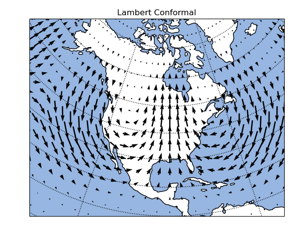

Note
Click here to download the full example code
Cartopy: Quiver plot on a regional projection¶
Out:
<Figure size 600x510 with 1 Axes>
import pygeode as pyg
import numpy as np, pylab as pyl
from cartopy import crs as ccrs
import cartopy
# Construct latitude and longitude coordinate system
lat = pyg.gausslat(40)
lon = pyg.regularlon(80, origin=-180)
# Generate x and y components of a vector field on this coordinate system
x = pyg.sin(2*np.pi * lon / 180.) * pyg.exp(-(lat - 30)**2 / (2*10**2))
y = pyg.cos(4*np.pi * lon / 180.) * pyg.exp(-(lat - 40)**2 / (4*10**2))
# Turn off interactivity
pyl.ioff()
# Build CartopyAxis for a Lambert Conformal projection
prj = dict(central_longitude=-90., central_latitude = 39.)
ax = pyg.plot.CartopyAxes(projection = 'LambertConformal', prj_args = prj)
ax.size = [6., 5.1]
# Add ocean
ax.add_feature(cartopy.feature.OCEAN)
# Add quiver plot
pyg.vquiver(x, y, axes=ax, width = 0.005)
# Set plot title
ax.setp(title = 'Lambert Conformal')
# Set map extent to region over North America
ax.set_extent([-140, -50, 10, 75], crs = ccrs.PlateCarree())
# Turn on matplotlib interactivity
pyl.ion()
# Produce plot
ax.render(2)